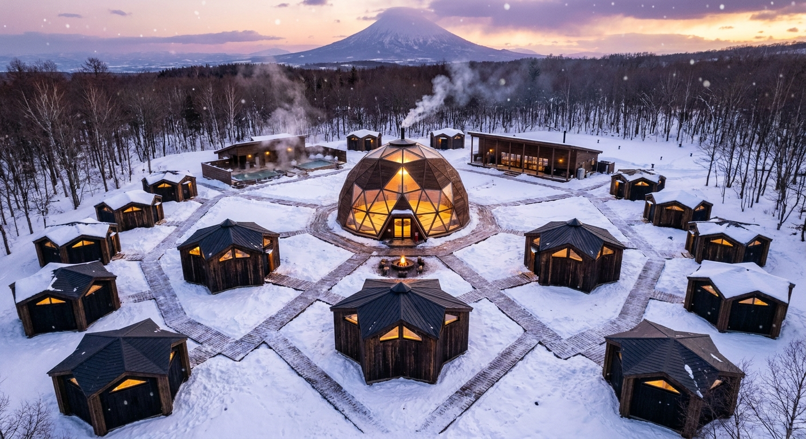
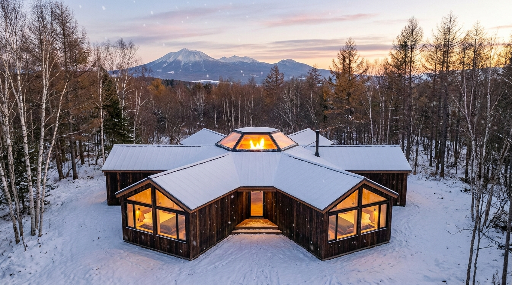

Living · 暮らしの風景
泊まる・癒す・集う。六つの頂点の、一日。

泊 — 客室
三角窓いっぱいに、雪と山。焼杉の壁に守られて眠る。

癒 — 温泉
湯けむりの向こうに、火の灯るドーム。一日をほどく。

祭 — 参道
灯篭の道をたどると、火とドームが迎える。
弟子屈・美留和に建てる、六芒星の村。
泊まる・組む・祭る。本人の声で、ご覧ください。
のぼる三角は 創る（体・頭・祭）。くだる三角は 癒す（泊・食・癒）。 六つの頂点に、暮らしのすべてを置く。中心には、いつも火がある。
柔術。体の一本を組む大ドーム道場。
学び、つくる。頭の一本。
火を囲む音楽フェス。
六つの頂点に、十人が眠る。
土地の食。みんなで囲む。
美留和の湯で、ほどく。
同じ六芒星キャビンを増やすだけ。構法もパースもコストも使い回せるから、安く積み上がる。
| フェーズ | 構成 | 収容 |
|---|---|---|
| 初期 | 六芒星キャビン 1棟（6ポッド＋火の間） | 約10人 |
| 拡張 | 同型キャビン6棟＋中心ドーム道場 | 約60人 |
| 将来 | 外周6棟＋温泉・食堂（村全体が六芒星） | 約100人 |
三角窓いっぱいに、雪と山。焼杉の壁に守られて眠る。
湯けむりの向こうに、火の灯るドーム。一日をほどく。
灯篭の道をたどると、火とドームが迎える。
夢（パース）と、建つ証拠（bim.house のBIM）を、同じ画面に重ねる。 一体＝村全体の配置（16棟・構造 PASS）、個別＝建てる1棟（houki・構造ともに PASS）。


「パース」で夢を見て、「BIM」で建つことを確かめる。同じ村の、一体と個別を、同じ画面で。
bim.house がその場で判定。NG項目ゼロ。
偏心率・剛性率・柱梁チェック通過。
籾殻断熱SIPs・くん炭・焼杉。地のもので組む。
六芒星キャビンを1棟貸し／村貸し。10人→100人にスケール。
火を囲むステージ。チケット＋物販。冬のオーロラ回。
柔術＋AI合宿。研修費を地域貢献として設計。
house SKU・予約金、PermitPack（確認申請書類）の販売。
いま始められる入口：設計予約金 ¥50,000〜（≈ USD 330）。※宿泊の本予約とは別。